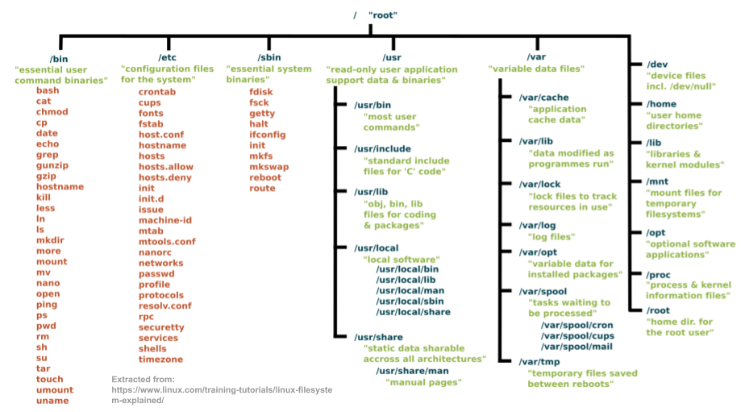

Linux is a family of open-source Unix-like operating systems based on the Linux kernel, an operating system kernel first released on September 17, 1991, by Linus Torvalds. Linux is typically packaged in a Linux distribution. -Wikipedia
Linux is a kernel. A kernel is the core of the operating system that is responsible for starting/stopping other programs, handling requests for memory, accessing disks, and managing network connections. Abstractly, people use the term Linux to refer to a given Linux Distribution which is defined as a collection of software (with the Linux Kernel at the core) that together makes an operating system. Linux is a multitasking, multi-user, multipurpose operating system and the largest collaborative project in the history of humankind. Linux is a modular system which means that all its components are separate from each other which is what makes it the preferred operating system for embedded devices. Linux is the most used operating system in the world because most web servers run on Linux. In addition to its dominance in the Internet’s backbone, Android, Chromebooks (and other Google devices), Amazon fire devices, even Tesla cars use the Linux Kernel in their operating systems.
A complete Linux system package is called a Linux Distribution. There is over 150 Linux distribution available to meet any computing requirement you could have. There are two main Linux distributions that branch out most of the other distros out there: Debian and Redhat. There are other independent distros like Slackware and Arch Linux. The main difference between distribution is the way they package and manage software. There are other differences like the init system. However, since they all share the same Kernel, they have more in common than they differ. Most Linux distributions follow the Filesystem Hierarchy Standard and pack the Bash shell as the default shell.
A filesystem defines the way files are stored and organized in an operating system. Linux, like Unix, has a root directory from where all the files are arranged. Linux follows the Filesystem Hierarchy Standard (FHS) which specifies requirements and guidelines for file and directory placement in UNIX-like operating systems.
The pwd is used for printing the present working directory. To use the pwd command use the following formula
pwd
Example:
pwd
The cd command is used for changing directories. The cd command takes for argument a destination in the form of an absolute path or relative path.
cd + destination
Examples:
The ls command is used for listing all the files in a given directory. To use the ls commmand use the following formula
ls + option + directory or file to list
When no directory is given, the ls command will list the present working directory. In Linux, a period at the beginning of a file name indicates a hidden file; ex: .bashrc
Examples:
The The tree is used to recursively list or display the content of a directory in a tree-like format. The tree program is not an internal command and must be installed with the package manager of your distribution. To install tree in Ubuntu/Debian use: sudo apt install tree -y To use the tree command use the following formula:
tree + option + directory to list
When no directory is given, the tree command will list the present working directory.
Examples:
Examples:
Examples:
Examples:
Examples:
Examples:
Examples: